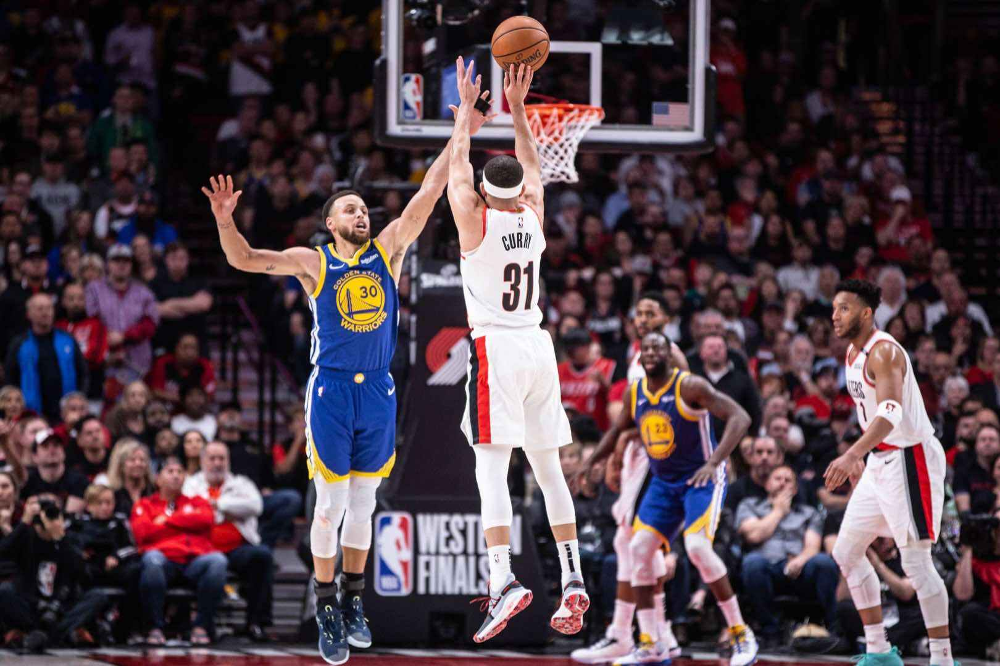

A final da Conferência Oeste da NBA guarda um grande confronto além do embate entre as franquias Warriors e Blazers. Os irmãos Seth e Stephen Curry se enfrentam em lados opostos com direito aos pais nas arquibancadas,os irmãos jogando 1 contra o outro na quadra.
Stephen Curry e Seth Curry, estavam se preparando com aquecimentos para se enfrentar em uma partida da NBA (Warriors e Blazers). Os dois jogadores estavam muito concentrados e focados em ajudar suas equipes a vencer. O jogo começou com Seth Curry tendo a posse da bola. Ele driblou em direção à cesta e conseguiu realizar um arremesso preciso, marcando os primeiros pontos da partida. Stephen não se preocupou e logo respondeu com um arremesso de três pontos, empatando o jogo, Ficando 3x3. A partida continuou intensa, com os irmãos mostrando todo seu talento em quadra. Stephen mostrou sua habilidade em dribles e arremessos precisos de longa distância,enquanto Seth Curry mostrou sua habilidade em sua movimentação rápida e arremessos de média distancia da cesta...
As equipes dos irmãos estavam empatadas durante parte do jogo, mas no final, a equipe de Stephen conseguiu uma vantagem de alguns pontos. Seth tentou levar sua equipe à vitória com alguns arremessos cruciais, mas a defesa de Stephen se manteve forte e conseguiu segurar a vantagem até o final da partida. No final do jogo, os irmãos Embora a rivalidade em quadra fosse intensa,no fim das contas, eram irmãos. O jogo foi disputado,que tiveram a oportunidade de ver dois dos melhores jogadores da liga se enfrentando em uma partida (NBA)..